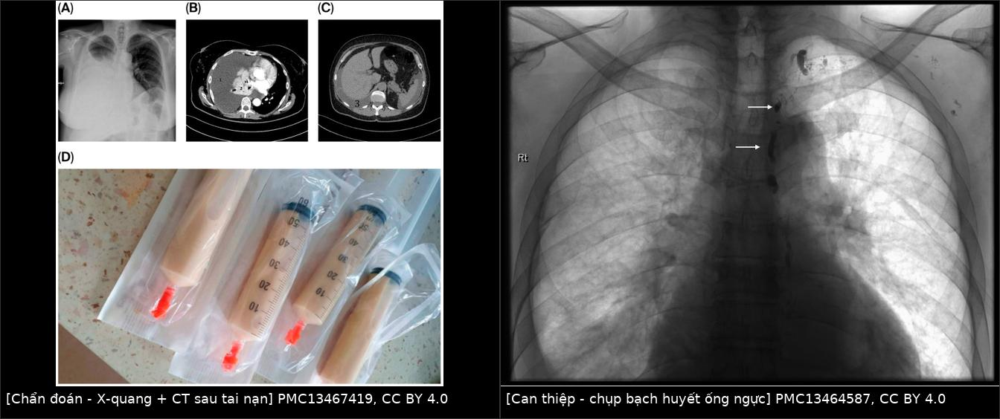
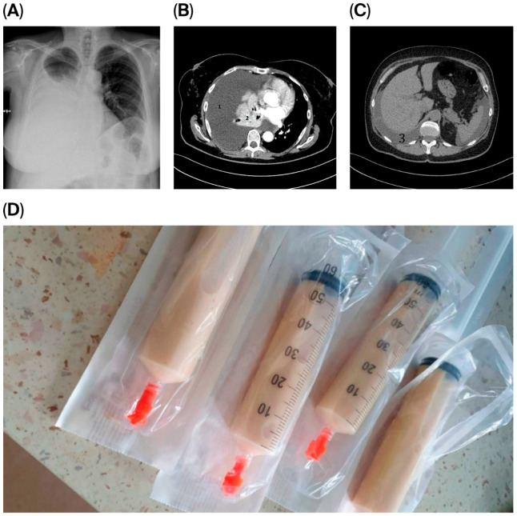
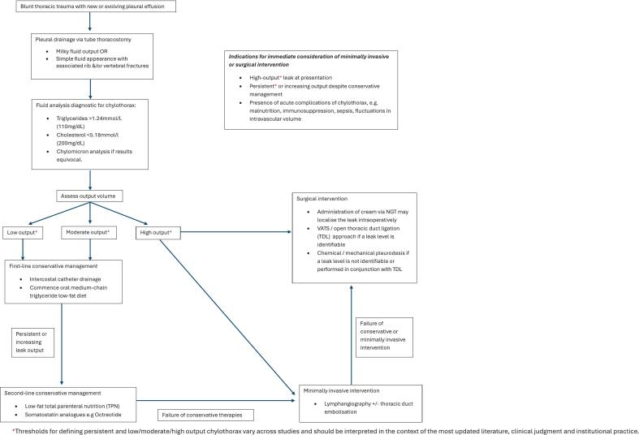
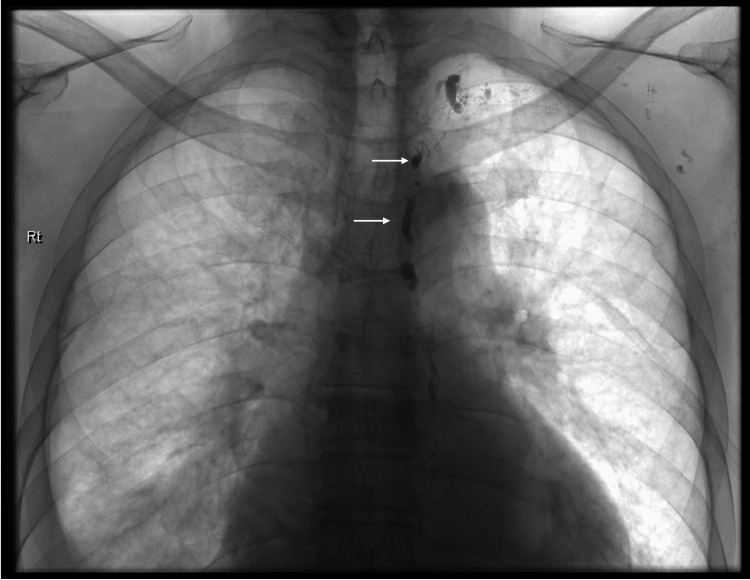

1881 — Tràn dưỡng trấp màng phổi sau chấn thương ngực kín / Blunt traumatic chylothorax
Tags: pattern:chylothorax pattern:tran-dich-mang-phoi pattern:ro-bach-mach vung:mong-phoi vung:trung-that vung:ong-nguc protocol:X-quang-nguc protocol:CT-nguc protocol:chup-bach-huyet score:TG-dich score:luu-luong-mL-ngay
Mức chắc chắn (certainty): tổng hợp y văn (literature synthesis) — biên từ loạt 4 ca chấn thương ngực kín tại 1 trung tâm chấn thương cấp 1 trong 22 năm (Trauma Case Rep 2026, PMC13217832), thuật toán EAST 2026 cho tràn dịch màng phổi/empyema/chylothorax (J Trauma Acute Care Surg, PMC13619141), ca tràn dưỡng trấp phải sau tai nạn ô tô (J Clin Med 2026, PMC13467419) và kỹ thuật chụp bạch huyết qua hạch bẹn (PMC13464587). Nhóm không có bệnh nhân của mình.
Câu chốt: sau chấn thương ngực kín, tràn dưỡng trấp không xuất hiện lúc nhập viện mà xuất hiện muộn 2–10 ngày, khi bệnh nhân đã qua giai đoạn cấp — nên nó bị đọc là "tràn dịch tồn dư do gãy sườn". Chốt chẩn đoán không phải hình ảnh mà là triglyceride dịch màng phổi > 110 mg/dL (1,24 mmol/L), và chốt điều trị không phải "chọc dẫn lưu" mà là theo dõi lưu lượng theo ngày để quyết định dinh dưỡng ít mỡ, octreotide, hay can thiệp bạch huyết.
1. Tổng quan bệnh học – cơ chế hình ảnh (TẠI SAO)
1.1 Giải phẫu quyết định bên và độ trễ
- Ống ngực (thoracic duct) đi từ bể dưỡng trấp (cisterna chyli) ngang L1–L2, lên bên phải cột sống, bắt chéo sang trái ở mặt phẳng T4–T6, rồi đổ vào góc tĩnh mạch cảnh trong – dưới đòn trái. Vì vậy vị trí tổn thương quyết định bên tràn dịch: tổn thương dưới T6 → tràn dưỡng trấp bên PHẢI; trên T4 → bên TRÁI; ngang T4–T6 → hai bên (PMC13217832).
- Cơ chế chấn thương kín: lực cắt do tăng–giảm tốc (shear force) làm rách thành ống ngực, chứ không phải do xương đâm trực tiếp. Gãy sườn và gãy đốt sống là tổn thương đi kèm làm tăng nguy cơ (PMC13217832) — nên bài học lâm sàng là: bệnh nhân gãy sườn/gãy sống ngực có tràn dịch mới là đối tượng phải nghĩ tới, nhưng cơ chế năng lượng thấp (ngã từ 2 m) cũng đủ gây rò.
- TẠI SAO xuất hiện muộn 2–10 ngày: lưu lượng dưỡng trấp thấp hơn nhiều so với máu, dịch tích dần trong khoang màng phổi; đồng thời rò ban đầu thường bị chèn ép bởi máu tụ trung thất/khoang màng phổi sau chấn thương. Khi máu tụ tan và dẫn lưu được rút, dịch dưỡng trấp mới "lộ ra" — biểu hiện là dịch mới tái lập nhanh sau khi rút ống hoặc dịch đổi màu từ máu sang trắng đục. Trong loạt 4 ca, chẩn đoán trễ 2–10 ngày; y văn ghi nhận trễ tới 7 ngày là điển hình (PMC13217832).
1.2 Vật lý hình ảnh: vì sao CT không phân biệt được dưỡng trấp với dịch thấm
- Dịch dưỡng trấp là dịch có protein thấp–trung bình, không có mỡ tự do dạng giọt lớn, nên đậm độ CT gần nước (khoảng 0–10 HU) — trùng hoàn toàn với dịch thấm và dịch màng phổi do chấn thương. Máu màng phổi cấp 35–70 HU và mủ (empyema) 15–45 HU mới tách được trên CT (PMC13619141).
- Vì vậy không tồn tại "dấu hiệu CT của dưỡng trấp": CT/X-quang chỉ trả lời có bao nhiêu dịch, có khu trú/vách, có chèn ép, có tổn thương đi kèm (gãy sườn, gãy sống, máu tụ trung thất, vỡ cơ hoành). Mọi chẩn đoán dưỡng trấp đều phải qua chọc hút + xét nghiệm dịch.
- Màu sữa không phải tiêu chuẩn: dịch đục chỉ gặp ở 22–44% bệnh nhân, vì độ đục do tán xạ ánh sáng của chylomicron; bệnh nhân đói hoặc nuôi tĩnh mạch không có chylomicron → dịch vàng trong dù vẫn là dưỡng trấp (PMC13217832).
- Ngưỡng chốt: triglyceride dịch > 110 mg/dL (1,24 mmol/L) là chẩn đoán xác định; 50–110 mg/dL là vùng xám, phải làm điện di lipoprotein/tìm chylomicron; hiện diện chylomicron khẳng định chẩn đoán (PMC13619141).
1.3 Dịch tễ và ngưỡng định lượng (số phải nhớ)
- Tần suất: ~80% tràn dưỡng trấp là do y khoa (iatrogenic); thể không do y khoa gặp 0,9–1,3% ở vết thương xuyên thấu và 0,2–3% ở chấn thương kín (PMC13217832). Đây là lý do bài này hiếm nhưng không được bỏ: chỉ vài ca/năm ở một trung tâm lớn.
- Loạt 4 ca (22 năm, 1 trung tâm cấp 1): dịch dẫn lưu 903–3.680 mL, thời gian rò 4–22 ngày, trễ chẩn đoán 2–10 ngày; 1/4 ca bị suy dinh dưỡng + nhiễm trùng do mất dưỡng trấp kéo dài (giảm 22 kg) (PMC13217832).
- Ngưỡng lưu lượng để quyết định (EAST 2026): nếu lưu lượng < 500 mL/ngày trong 5–7 ngày** → khả năng cao tự lành, tiếp tục nội khoa; nếu **> 500 mL/ngày sau 5–7 ngày, hoặc dịch đáng kể kéo dài quá 2 tuần → phải can thiệp bít rò (PMC13619141). Một số tác giả dùng ngưỡng > 1.000 mL/ngày × 5 ngày liên tiếp là chỉ định mổ (PMC13217832 — ngưỡng không thống nhất giữa các nghiên cứu, phải ghi rõ mâu thuẫn này).
- Tiên lượng: tới 50% tràn dưỡng trấp không do ung thư khỏi bằng dẫn lưu + dinh dưỡng; rò lưu lượng cao kéo dài có tử vong dài hạn 25–50% vì mất dịch, protein, lympho bào và immunoglobulin (PMC13217832).
2. Mẫu hình + chẩn đoán phân biệt theo vị trí và cơ chế (Gamut)
- Nhóm A — rò ống ngực trong lồng ngực: dịch một bên, bên cùng phía với tổn thương so với mốc T4–T6; xuất hiện 2–10 ngày sau chấn thương; thường kèm gãy sườn/gãy đốt sống. Đáp ứng tốt với dinh dưỡng ít mỡ ± octreotide.
- Nhóm B — rò dưới hoành (ống ngực/bể dưỡng trấp bị rách trong ổ bụng): biểu hiện hai tầng: cổ trướng dưỡng trấp (chylous ascites) + tràn dưỡng trấp màng phổi phải (dưỡng trấp bụng qua lỗ cơ hoành, hoặc qua vết rách cơ hoành). Trong loạt ca, một bệnh nhân có cổ trướng dưỡng trấp lan rộng trên CT bụng mà không có vỡ cơ hoành (PMC13217832) — nếu chỉ nhìn phim ngực sẽ bỏ sót nguồn rò.
- Nhóm C — rò nhánh bạch huyết nhỏ trong trung thất: lưu lượng thấp, tự lành nhanh (4–5 ngày), đáp ứng hoàn toàn với dinh dưỡng ít mỡ.
- Nhóm D — KHÔNG phải dưỡng trấp (bắt buộc loại trừ):
- Máu màng phổi (hemothorax): sau chấn thương, Hct dịch ≈ Hct máu, đông thành cục, 35–70 HU, tụt huyết sắc tố.
- Tràn dịch phản ứng/do xẹp phổi: dịch lượng ít, một bên, tự hết trong 48–72 giờ, không tăng lại sau khi rút ống.
- Empyema: sốt, dịch đục/mủ, 15–45 HU, pH < 7,2, glucose thấp, cấy dương (bài 040).
- Pseudochylothorax: dịch đục do tinh thể cholesterol (thường sau tràn dịch mạn nhiều năm, lao cũ), không có chylomicron, TG thấp, cholesterol cao.
- Tràn dưỡng trấp do tắc tĩnh mạch (CVP cao): bệnh nhân có ống thông tĩnh mạch trung tâm lâu ngày, huyết khối chủ trên/dưới đòn — nút ống ngực vô ích nếu không giải ép tĩnh mạch (bài 6161).
- 4 câu hỏi định vị khi đứng trước "tràn dịch mới sau chấn thương": (1) xuất hiện ngày thứ mấy? (2) bên nào so với mốc T4–T6? (3) TG dịch > 110 mg/dL? (4) có cổ trướng dưỡng trấp trên CT bụng không?
3. Bảng so sánh phân biệt (ma trận đối chiếu)
| Thực thể (entity) | Hình ảnh điển hình | Chốt vào (rule-in) | Chốt loại (rule-out) | Gợi ý xác nhận |
|---|---|---|---|---|
| Rò ống ngực do chấn thương kín (nhóm A) | Tràn dịch một bên mới, 0–10 HU, xuất hiện 2–10 ngày sau va đập; gãy sườn/sống ngực | TG dịch > 110 mg/dL + chylomicron + dịch tái lập nhanh sau rút ống | TG < 50 mg/dL, Hct dịch ≈ Hct máu, dịch tự hết sau 48–72 giờ → không phải dưỡng trấp | Chọc hút: TG, chylomicron, tế bào, protein, LDH; đếm mL/ngày |
| Rò dưới hoành (nhóm B) | Cổ trướng dưỡng trấp + tràn dịch phải; CT bụng thấy dịch quanh tụy/động mạch chủ bụng | TG dịch bụng > 110 mg/dL kèm tràn dịch phải | Chỉ tràn dịch ngực, bụng không dịch → nhóm A | CT bụng có cản quang, xét nghiệm dịch bụng |
| Máu màng phổi (hemothorax) | Mờ đáy phổi, có thể mức ngang, thiếu máu, 35–70 HU | Hct dịch gần Hct máu, đông cục | Dịch không đông, Hct thấp, TG cao → là dưỡng trấp | Hct dịch, Hb/Hct máu |
| Tràn dịch phản ứng sau chấn thương | Lượng ít, một bên, đáy phổi | Ổn định/tự hết 48–72 giờ, không tái lập | Tăng thể tích sau khi rút ống, TG cao → rò dưỡng trấp | So phim cũ, siêu âm đầu giường |
| Empyema | Dịch khu trú, vách, dày màng phổi, sốt | pH < 7,2, glucose thấp, LDH cao, cấy dương, 15–45 HU | Dịch vô khuẩn, pH > 7,3, không vách | Cấy + sinh hóa dịch |
| Pseudochylothorax | Dịch đục mạn, dày màng phổi, có thể vôi hóa | Tinh thể cholesterol, cholesterol cao, KHÔNG có chylomicron, TG thấp | Chylomicron dương, TG > 110 → dưỡng trấp thật | Điện di lipoprotein |
| Dưỡng trấp do tắc tĩnh mạch trung tâm | Tràn dịch hai bên/tái phát, phù mặt, bàng hệ; có catheter | Huyết khối tĩnh mạch chủ trên/dưới đòn trên Doppler/CTV | Tĩnh mạch thông, một bên, đáp ứng nhanh với MCT → rò trực tiếp | Doppler tĩnh mạch trung tâm, đo CVP |

Trái: X-quang ngực (A) + CT ngực (B) + CT bụng (C) của ca tràn dưỡng trấp phải sau tai nạn ô tô, và dịch dưỡng trấp hút ra (D) — J Clin Med 2026 (PMC13467419, CC BY 4.0). Phải: chụp bạch huyết qua hạch bẹn, mũi tên chỉ phần trên ống ngực đã ngấm thuốc — PMC13464587, CC BY 4.0. Ảnh ghép letterbox, không crop/kéo giãn.Dấu hiệu cần đọc đúng trên từng phương thức
- X-quang ngực: chỉ là mờ đáy phổi/xóa góc sườn hoành; không phân biệt được dưỡng trấp với máu/dịch thấm. Giá trị thật là so phim trước–sau: dịch mới xuất hiện hoặc tái lập nhanh sau khi đã rút ống dẫn lưu.
- Siêu âm phổi đầu giường: khoảng không hồi âm, phổi xẹp đập theo nhịp tim trong dịch; hướng dẫn chọc khi lượng dịch ít hoặc khu trú. Không có dấu hiệu đặc hiệu của dưỡng trấp.
- CT ngực có cản quang: trả lời 3 câu — dịch ở đâu (khoang tự do/khu trú), đậm độ bao nhiêu HU, có tổn thương đi kèm không (gãy sườn, gãy sống, máu tụ trung thất, vỡ cơ hoành, dưỡng trấp bụng). Lưu ý cạm bẫy dịch màng phổi vs cổ trướng (mục 5).
- Chụp bạch huyết (lymphangiography) qua hạch bẹn: bơm thuốc cản quang vào hạch bẹn → thấy bể dưỡng trấp và ống ngực, xác định điểm rò và cho phép nút ống ngực qua da (TDE) ngay sau đó. Đây là phương thức duy nhất "nhìn thấy" dưỡng trấp; X-quang/CT thì không.
4. Protocol chụp + phân tầng điều trị theo lưu lượng
4.1 Chẩn đoán theo bước
- Bước 1 — X-quang ngực mỗi khi bệnh nhân chấn thương ngực có khó thở mới, giảm thông khí một bên, hoặc tăng nhu cầu oxy sau khi đã ổn định.
- Bước 2 — siêu âm phổi đầu giường để định lượng và hướng dẫn chọc/dẫn lưu; đặt catheter nhỏ (< 14 Fr) dưới hướng dẫn siêu âm để giảm nguy cơ tràn khí (PMC13619141).
- Bước 3 — chọc hút/dẫn lưu + xét nghiệm dịch: triglyceride (bắt buộc), điện di lipoprotein/tìm chylomicron nếu TG 50–110 mg/dL, kèm tế bào, protein, albumin, LDH, glucose, pH, cấy, AFB nếu nghi lao.
- Bước 4 — CT ngực (và CT bụng nếu nghi nhóm B) khi: dịch khu trú/vách, nghi empyema, nghi tổn thương mạch máu, hoặc dịch tái lập nhanh mà chưa rõ nguồn.
- Bước 5 — chụp bạch huyết ± TDE khi đã quyết định can thiệp và có đội can thiệp mạch/bạch huyết.
4.2 Phân tầng theo lưu lượng (biến số quyết định, không phải số mL tuyệt đối của một lần đo)
- Ghi lưu lượng mL/24 giờ mỗi ngày, theo xu hướng 3–5 ngày; đồng thời cân nặng, albumin, điện giải, lympho bào, IgG.
- Bậc 1 — dinh dưỡng: ngừng mỡ chuỗi dài, dùng MCT (hấp thu trực tiếp qua tĩnh mạch cửa, không đi qua dưỡng trấp), tăng protein; nếu lưu lượng cao → ngừng ăn hoàn toàn + nuôi tĩnh mạch toàn phần (TPN) (PMC13619141).
- Bậc 2 — octreotide: khởi đầu 100–200 µg mỗi 8 giờ; phối hợp TPN cho thành công gần 80–90%, thời gian liền rò 5–10 ngày; dạng tác dụng kéo dài dùng khi cần điều trị lâu (PMC13619141).
- Bậc 3 — chụp bạch huyết ± nút ống ngực (TDE): tổng quan hệ thống cho thấy chụp bạch huyết đơn thuần làm ngừng rò ở 63,7%, TDE ở 92,4% ca tràn dưỡng trấp do chấn thương (PMC13217832 dẫn Kim và cs.).
- Bậc 4 — mổ: buộc ống ngực (TDL) thành công ~90%; gây dính màng phổi thành công 80–100%; trước mổ cho bữa ăn nhiều mỡ hoặc tiêm indocyanine green để nhìn thấy ống ngực — nếu không thấy điểm rò thì buộc khối mô quanh lỗ hoành (PMC13619141). Trong loạt ca, 2/4 ca không tìm thấy điểm rò khi mổ và được gây dính hóa học/cơ học thay vì buộc ống ngực (PMC13217832).
flowchart TD
A[Tran dich moi sau chan thuong nguc kin] --> B[Choc hut: TG, chylomicron, te bao, cay]
B --> C{TG dich tren 110 mg/dL}
C -->|Khong| D[Mau, dich phan ung, empyema, pseudochylothorax]
C -->|Co| E{Co co truong duong trap tren CT bung}
E -->|Co| F[Ro duoi hoanh: xu ly nguon o bung]
E -->|Khong| G[Ro ong nguc trong long nguc]
F --> G
G --> H[Diet it mo MCT hoac ngung an va TPN]
H --> I{Luu luong moi ngay}
I -->|Duoi 500 mL va giam trong 5 den 7 ngay| H
I -->|Tren 500 mL sau 5 den 7 ngay| J[Octreotide 100 den 200 mcg moi 8 gio]
J --> K{Con ro sau 2 tuan}
K -->|Khong| L[Giam dan che do va rut ong]
K -->|Co| M[Chup bach huyet va nut ong nguc qua da]
M --> N{Thanh cong}
N -->|Khong| O[Mo buoc ong nguc hoac gay dinh mang phoi]
4.3 Theo dõi và biến chứng phải chủ động tìm
- Suy dinh dưỡng và giảm miễn dịch: mất protein, immunoglobulin, lympho bào → phù, giảm IgG, nhiễm trùng tái diễn. Đây là lý do không được "chọc dẫn lưu rồi theo dõi thụ động" (PMC13217832).
- Nhiễm trùng: dưỡng trấp là môi trường nuôi cấy tốt; sốt + dịch đục lên không được mặc định là "dưỡng trấp nhiễm" — phải cấy và loại trừ empyema thực sự.
- Rối loạn thể tích: mất dịch lớn gây tụt huyết áp, hạ natri, đặc biệt ở bệnh nhân đa chấn thương.
5. Biến thể bình thường và cạm bẫy
- Cạm bẫy 1 — "phim lúc ra viện bình thường nên đã ổn": thể chấn thương kín xuất hiện muộn 2–10 ngày; bệnh nhân đã ra viện rồi tái nhập vì khó thở và tăng cân (ca 1 trong loạt: tăng 5 kg, ứ dịch phải sau 10 ngày) (PMC13217832). Luôn dặn bệnh nhân tái khám nếu khó thở tăng.
- Cạm bẫy 2 — "dịch trong nên không phải dưỡng trấp": bệnh nhân đói/TPN có dịch vàng trong; màu sữa chỉ gặp 22–44%. Luôn gửi TG bất kể màu dịch.
- Cạm bẫy 3 — nhầm với máu màng phổi: sau chấn thương, dưỡng trấp thường pha máu ở ngày đầu; nếu chỉ nhìn màu hồng và gọi là hemothorax thì bỏ sót. Hct dịch ≈ Hct máu mới là máu; TG > 110 mg/dL mới là dưỡng trấp.
- Cạm bẫy 4 — bỏ sót nguồn rò dưới hoành: tràn dịch phải + cổ trướng trên CT bụng là nhóm B; can thiệp vào ống ngực mà không xử lý nguồn dưới hoành sẽ thất bại.
- Cạm bẫy 5 — hút áp lực cao "cho phổi nở": làm tăng lưu lượng rò, mất protein và lympho nhanh hơn; dùng dẫn lưu kín, áp lực thấp (PMC13217832 dẫn y văn; bài 6161).
- Cạm bẫy hình học — dịch màng phổi vs cổ trướng trên CT ngang: dùng dấu crus lệch (displaced crus sign) và dấu bare area; dịch màng phổi đẩy crus ra sau, cổ trướng nằm trước crus và ôm mặt sau gan. Cùng đậm độ dịch, vị trí tương đối với cơ hoành/crus mới quyết định tên gọi — đây là lỗi hay gặp khi đọc "dịch quanh gan" ở bệnh nhân đa chấn thương.
- Biến thể bình thường: dịch màng phổi ít sau gãy sườn (vài mm, mất trong 48–72 giờ) là phản ứng lành tính — không chọc nếu bệnh nhân ổn định, không tăng nhu cầu oxy, không lệch trung thất.
6. Tự lượng giá — Blind Quiz
Ca 1 — Nữ 57 tuổi, tai nạn ô tô, khó thở tăng dần ngày thứ 6; phổi phải mờ đáy, đã rút ống dẫn lưu ngực ngày 4.

- Hỏi: mô tả (A) và (B). Dịch nằm ở đâu, đậm độ bao nhiêu? (C) cho thêm thông tin gì? Ba chẩn đoán phân biệt và xét nghiệm nào chốt?
Bấm để hiện đáp án
- (A) X-quang: mờ toàn bộ khoang màng phổi phải, xóa góc sườn hoành, không thấy rõ mức ngang. (B) CT ngực: tràn dịch phải lượng lớn gây xẹp thùy dưới phổi phải, dịch đồng nhất, đậm độ gần nước; không có dấu hiệu đặc hiệu của dưỡng trấp. (C) CT bụng: dịch tự do quanh gan/lách — buộc phải loại trừ nguồn rò dưới hoành.
- Phân biệt: tràn dưỡng trấp do chấn thương, máu màng phổi tồn dư, tràn dịch phản ứng, empyema.
- Chốt: chọc hút → triglyceride dịch > 110 mg/dL (1,24 mmol/L) và/hoặc có chylomicron; nếu TG 50–110 mg/dL → điện di lipoprotein. Dịch hút ra trong ca gốc có màu sữa (ảnh D của figure gốc).
- Nguồn ảnh: J Clin Med 2026 (PMC13467419, CC BY 4.0) — ca tràn dưỡng trấp phải sau tai nạn ô tô.
Ca 2 — Nam 23 tuổi, đa chấn thương, ngày 26 xuất hiện khó thở và đau ngực kiểu màng phổi; dẫn lưu trái ra 330 mL dịch sữa, TG 9,9 mmol/L. Ngày 39 vẫn > 200 mL/ngày.

- Hỏi: bệnh nhân đang ở bậc nào của thuật toán? Vì sao octreotide không thay thế được can thiệp ở ca này? Mốc nào buộc phải chuyển bậc?
Bấm để hiện đáp án
- Đã qua bậc 1 (dẫn lưu + ăn ít mỡ) và bậc 2 (octreotide tĩnh mạch): lưu lượng giảm 4 ngày rồi bật lại 430 mL/24 giờ sau một bữa ăn có mỡ — đúng như cơ chế "lưu lượng phụ thuộc chylomicron".
- Octreotide chỉ là bậc 2, thành công cao khi phối hợp TPN nhưng không sửa được lỗ rò cơ học; khi lưu lượng > 500 mL/ngày sau 5–7 ngày hoặc kéo dài > 2 tuần → phải chụp bạch huyết ± TDE, rồi buộc ống ngực/gây dính (PMC13619141).
- Ca gốc: VATS ngày 48, không thấy điểm rò → gây dính mạn phổi; tổng dịch dưỡng trấp 3.680 mL, rò 22 ngày, sụt 22 kg — bài học: chờ quá lâu = suy dinh dưỡng + nhiễm trùng, dù cuối cùng vẫn khỏi.
- Nguồn ảnh: Trauma Case Rep 2026 (PMC13217832, CC BY-NC-ND) — hình nguyên bản, không chỉnh sửa.
Ca 3 — Bệnh nhân tràn dưỡng trấp lượng lớn, đã quyết định can thiệp; hình dưới là phim huỳnh quang sau khi bơm thuốc cản quang qua hạch bẹn hai bên.

- Hỏi: cấu trúc mũi tên chỉ là gì? Vì sao phải chụp bạch huyết trước khi nút ống ngực? Tỉ lệ thành công của hai bước này khác nhau thế nào?
Bấm để hiện đáp án
- Mũi tên chỉ phần trên của ống ngực đã ngấm thuốc cản quang (sau chụp bạch huyết qua hạch bẹn); hình cho biết đường đi và vị trí rò — điều kiện để đưa kim/coil vào đúng chỗ.
- Chỉ nhìn thấy đường rò mới nút được; chụp bạch huyết bản thân có thể làm ngừng rò (tác dụng xơ hóa của Lipiodol).
- Tỉ lệ ngừng rò: chụp bạch huyết đơn thuần 63,7%, TDE 92,4% (tổng quan hệ thống, dẫn qua PMC13217832). Nếu TDE thất bại → buộc ống ngực (~90%) hoặc gây dính (80–100%).
- Nguồn ảnh: PMC13464587, CC BY 4.0 — kỹ thuật chụp bạch huyết ngược dòng qua hạch bẹn.
Bài liên quan chéo
- 6161 – Tràn dưỡng trấp màng phổi sau mổ tim bẩm sinh — cùng ngưỡng TG, thể do CVP cao
- 1839 – Chylothorax sau cắt gan/ghép gan — thể sau mổ ổ bụng
- 1887 – Rò dưỡng trấp sau cắt thực quản — ngưỡng can thiệp sớm sau mổ
- 040 – Tràn dịch màng phổi — tiếp cận tràn dịch nói chung (dịch màng phổi vs cổ trướng)
- 3107 – Đứt động mạch dưới đòn sau chấn thương ngực kín — cùng bối cảnh "chấn thương ngực kín, mạch máu/tổn thương kín"
- 001 – Tổng quan hệ Ngực
Ảnh
- Tên file, nguồn, giấy phép từng ảnh:
images/CREDITS.md. Ảnh nguyên bản, không crop; ảnh ghép dùngtools/make_composite.py(letterbox, giữ tỉ lệ). Ảnh CC BY-NC-ND (thuật toán) dùng nguyên bản, không chỉnh sửa.
Không dùng để chẩn đoán độc lập khi chưa có người hướng dẫn.